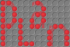

PLan User Interaction Style
The key values for PLan's user interface are:
- Keeping out of the way
- Few required fields, data entry is optional
- Intelligent defaults
- Plain: users' attention will be on the science not the interaction
- Pleasant; not ugly
- No learning curve; can be used without tuition
- Shortcuts for expert users
- Answers are on the screen before the question is asked
- Modifiable; reskinning should not need a lot of resource
PLan colours: White
This is black text on "PLan White" #eee. Most content should be presented like this, especially the user's data.
This is "PLan red" text on "PLan White". Most metadata should be presented like this.This is a standard link.
PLan colours: Red
This is white text on "PLan Red" rgb(242, 55, 65). Most of the page framework should be presented like this, including standard navigation menus. Use black text on "PLan Red" only for links.
PLan colours: Black
This is white text on "PLan Black" #333. Use "PLan red" text on "PLan Black" only for links.
Logo
The logo is available in several forms, including favicons. On most pages, it should appear only in the footer. If you want to change it, edit the SVG. Unfortunately no browsers render the SVG correctly, so use the PNGs in web pages.
{kind=link}
Icons
If icons need letters in, the font is Amaranth. This is the icon for help: i